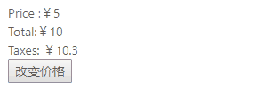

原文连接:https://www.cnblogs.com/fundebug/p/responsive-vue.html
摘要： 搞懂Vue响应式原理！
- 作者：浪里行舟
- 原文：深入浅出Vue响应式原理
Fundebug经授权转载，版权归原作者所有。
前言
Vue 最独特的特性之一，是其非侵入性的响应式系统。数据模型仅仅是普通的 JavaScript 对象。而当你修改它们时，视图会进行更新。这使得状态管理非常简单直接，不过理解其工作原理同样重要，这样你可以避开一些常见的问题。----官方文档
本文将针对响应式原理做一个详细介绍，并且带你实现一个基础版的响应式系统。本文的代码请猛戳Github博客
什么是响应式
我们先来看个例子：
<div id="app">
<div>Price :￥{{ price }}</div>
<div>Total:￥{{ price * quantity }}</div>
<div>Taxes: ￥{{ totalPriceWithTax }}</div>
<button @click="changePrice">改变价格</button>
</div>var app = new Vue({
el: '#app',
data() {
return {
price: 5.0,
quantity: 2
};
},
computed: {
totalPriceWithTax() {
return this.price * this.quantity * 1.03;
}
},
methods: {
changePrice() {
this.price = 10;
}
}
})
上例中当price 发生变化的时候，Vue就知道自己需要做三件事情：
- 更新页面上price的值
- 计算表达式 price*quantity 的值，更新页面
- 调用totalPriceWithTax 函数，更新页面
数据发生变化后，会重新对页面渲染，这就是Vue响应式，那么这一切是怎么做到的呢？
想完成这个过程，我们需要：
- 侦测数据的变化
- 收集视图依赖了哪些数据
- 数据变化时，自动“通知”需要更新的视图部分，并进行更新
对应专业俗语分别是：
- 数据劫持 / 数据代理
- 依赖收集
- 发布订阅模式
如何侦测数据的变化
首先有个问题，在Javascript中，如何侦测一个对象的变化？
其实有两种办法可以侦测到变化：使用Object.defineProperty和ES6的Proxy，这就是进行数据劫持或数据代理。这部分代码主要参考珠峰架构课。
方法1. Object.defineProperty实现
Vue通过设定对象属性的 setter/getter 方法来监听数据的变化，通过getter进行依赖收集，而每个setter方法就是一个观察者，在数据变更的时候通知订阅者更新视图。
function render () {
console.log('模拟视图渲染')
}
let data = {
name: '浪里行舟',
location: { x: 100, y: 100 }
}
observe(data)
function observe (obj) { // 我们来用它使对象变成可观察的
// 判断类型
if (!obj || typeof obj !== 'object') {
return
}
Object.keys(obj).forEach(key => {
defineReactive(obj, key, obj[key])
})
function defineReactive (obj, key, value) {
// 递归子属性
observe(value)
Object.defineProperty(obj, key, {
enumerable: true, //可枚举（可以遍历）
configurable: true, //可配置（比如可以删除）
get: function reactiveGetter () {
console.log('get', value) // 监听
return value
},
set: function reactiveSetter (newVal) {
observe(newVal) //如果赋值是一个对象，也要递归子属性
if (newVal !== value) {
console.log('set', newVal) // 监听
render()
value = newVal
}
}
})
}
}
data.location = {
x: 1000,
y: 1000
} //set {x: 1000,y: 1000} 模拟视图渲染
data.name // get 浪里行舟上面这段代码的主要作用在于：observe这个函数传入一个 obj（需要被追踪变化的对象），通过遍历所有属性的方式对该对象的每一个属性都通过 defineReactive 处理,以此来达到实现侦测对象变化。值得注意的是，observe 会进行递归调用。
那我们如何侦测Vue中data 中的数据，其实也很简单：
class Vue {
/* Vue构造类 */
constructor(options) {
this._data = options.data;
observer(this._data);
}
}这样我们只要 new 一个 Vue 对象，就会将 data 中的数据进行追踪变化。
不过这种方式有几个注意点需补充说明：
- 无法检测到对象属性的添加或删除(如
data.location.a=1)。
这是因为 Vue 通过Object.defineProperty来将对象的key转换成getter/setter的形式来追踪变化，但getter/setter只能追踪一个数据是否被修改，无法追踪新增属性和删除属性。如果是删除属性，我们可以用vm.$delete实现，那如果是新增属性，该怎么办呢？
1）可以使用 Vue.set(location, a, 1) 方法向嵌套对象添加响应式属性;
2）也可以给这个对象重新赋值，比如data.location = {...data.location,a:1}
Object.defineProperty不能监听数组的变化，需要进行数组方法的重写，具体代码如下：
function render() {
console.log('模拟视图渲染')
}
let obj = [1, 2, 3]
let methods = ['pop', 'shift', 'unshift', 'sort', 'reverse', 'splice', 'push']
// 先获取到原来的原型上的方法
let arrayProto = Array.prototype
// 创建一个自己的原型 并且重写methods这些方法
let proto = Object.create(arrayProto)
methods.forEach(method => {
proto[method] = function() {
// AOP
arrayProto[method].call(this, ...arguments)
render()
}
})
function observer(obj) {
// 把所有的属性定义成set/get的方式
if (Array.isArray(obj)) {
obj.__proto__ = proto
return
}
if (typeof obj == 'object') {
for (let key in obj) {
defineReactive(obj, key, obj[key])
}
}
}
function defineReactive(data, key, value) {
observer(value)
Object.defineProperty(data, key, {
get() {
return value
},
set(newValue) {
observer(newValue)
if (newValue !== value) {
render()
value = newValue
}
}
})
}
observer(obj)
function $set(data, key, value) {
defineReactive(data, key, value)
}
obj.push(123, 55)
console.log(obj) //[1, 2, 3, 123, 55]这种方法将数组的常用方法进行重写，进而覆盖掉原生的数组方法，重写之后的数组方法需要能够被拦截。但有些数组操作Vue时拦截不到的，当然也就没办法响应，比如：
obj.length-- // 不支持数组的长度变化
obj[0]=1 // 修改数组中第一个元素，也无法侦测数组的变化ES6提供了元编程的能力，所以有能力拦截，Vue3.0可能会用ES6中Proxy 作为实现数据代理的主要方式。
方法2. Proxy实现
Proxy 是 JavaScript 2015 的一个新特性。Proxy 的代理是针对整个对象的，而不是对象的某个属性，因此不同于 Object.defineProperty 的必须遍历对象每个属性，Proxy 只需要做一层代理就可以监听同级结构下的所有属性变化，当然对于深层结构，递归还是需要进行的。此外Proxy支持代理数组的变化。
function render() {
console.log('模拟视图的更新')
}
let obj = {
name: '前端工匠',
age: { age: 100 },
arr: [1, 2, 3]
}
let handler = {
get(target, key) {
// 如果取的值是对象就在对这个对象进行数据劫持
if (typeof target[key] == 'object' && target[key] !== null) {
return new Proxy(target[key], handler)
}
return Reflect.get(target, key)
},
set(target, key, value) {
if (key === 'length') return true
render()
return Reflect.set(target, key, value)
}
}
let proxy = new Proxy(obj, handler)
proxy.age.name = '浪里行舟' // 支持新增属性
console.log(proxy.age.name) // 模拟视图的更新 浪里行舟
proxy.arr[0] = '浪里行舟' //支持数组的内容发生变化
console.log(proxy.arr) // 模拟视图的更新 ['浪里行舟', 2, 3 ]
proxy.arr.length-- // 无效以上代码不仅精简，而且还是实现一套代码对对象和数组的侦测都适用。不过Proxy兼容性不太好！
为什么要收集依赖
我们之所以要观察数据，其目的在于当数据的属性发生变化时，可以通知那些曾经使用了该数据的地方。比如第一例子中，模板中使用了price 数据，当它发生变化时，要向使用了它的地方发送通知。那如果多个Vue实例中共用一个变量，如下面这个例子：
let globalData = {
text: '浪里行舟'
};
let test1 = new Vue({
template:
`<div>
<span>{{text}}</span>
<div>`,
data: globalData
});
let test2 = new Vue({
template:
`<div>
<span>{{text}}</span>
<div>`,
data: globalData
});如果我们执行下面这条语句：
globalData.text = '前端工匠';此时我们需要通知 test1 以及 test2 这两个Vue实例进行视图的更新,我们只有通过收集依赖才能知道哪些地方依赖我的数据，以及数据更新时派发更新。那依赖收集是如何实现的？其中的核心思想就是“事件发布订阅模式”。接下来我们先介绍两个重要角色-- 订阅者 Dep和观察者 Watcher ，然后阐述收集依赖的如何实现的。
订阅者 Dep
1.为什么引入 Dep
收集依赖需要为依赖找一个存储依赖的地方，为此我们创建了Dep,它用来收集依赖、删除依赖和向依赖发送消息等。
于是我们先来实现一个订阅者 Dep 类，用于解耦属性的依赖收集和派发更新操作，说得具体点，它的主要作用是用来存放 Watcher 观察者对象。我们可以把Watcher理解成一个中介的角色，数据发生变化时通知它，然后它再通知其他地方。
2. Dep的简单实现
class Dep {
constructor () {
/* 用来存放Watcher对象的数组 */
this.subs = [];
}
/* 在subs中添加一个Watcher对象 */
addSub (sub) {
this.subs.push(sub);
}
/* 通知所有Watcher对象更新视图 */
notify () {
this.subs.forEach((sub) => {
sub.update();
})
}
}以上代码主要做两件事情：
- 用 addSub 方法可以在目前的 Dep 对象中增加一个 Watcher 的订阅操作；
- 用 notify 方法通知目前 Dep 对象的 subs 中的所有 Watcher 对象触发更新操作。
所以当需要依赖收集的时候调用 addSub，当需要派发更新的时候调用 notify。调用也很简单：
let dp = new Dep()
dp.addSub(() => {
console.log('emit here')
})
dp.notify()给大家推荐一个好用的BUG监控工具Fundebug，欢迎免费试用！
观察者 Watcher
1.为什么引入Watcher
Vue 中定义一个 Watcher 类来表示观察订阅依赖。至于为啥引入Watcher，《深入浅出vue.js》给出了很好的解释:
当属性发生变化后，我们要通知用到数据的地方，而使用这个数据的地方有很多，而且类型还不一样，既有可能是模板，也有可能是用户写的一个watch,这时需要抽象出一个能集中处理这些情况的类。然后，我们在依赖收集阶段只收集这个封装好的类的实例进来，通知也只通知它一个，再由它负责通知其他地方。
依赖收集的目的是将观察者 Watcher 对象存放到当前闭包中的订阅者 Dep 的 subs 中。形成如下所示的这样一个关系（图参考《剖析 Vue.js 内部运行机制》）。

2. Watcher的简单实现
class Watcher {
constructor(obj, key, cb) {
// 将 Dep.target 指向自己
// 然后触发属性的 getter 添加监听
// 最后将 Dep.target 置空
Dep.target = this
this.cb = cb
this.obj = obj
this.key = key
this.value = obj[key]
Dep.target = null
}
update() {
// 获得新值
this.value = this.obj[this.key]
// 我们定义一个 cb 函数，这个函数用来模拟视图更新，调用它即代表更新视图
this.cb(this.value)
}
}以上就是 Watcher 的简单实现，在执行构造函数的时候将 Dep.target 指向自身，从而使得收集到了对应的 Watcher，在派发更新的时候取出对应的 Watcher ,然后执行 update 函数。
收集依赖
所谓的依赖，其实就是Watcher。至于如何收集依赖，总结起来就一句话，在getter中收集依赖，在setter中触发依赖。先收集依赖，即把用到该数据的地方收集起来，然后等属性发生变化时，把之前收集好的依赖循环触发一遍就行了。
具体来说，当外界通过Watcher读取数据时，便会触发getter从而将Watcher添加到依赖中，哪个Watcher触发了getter，就把哪个Watcher收集到Dep中。当数据发生变化时，会循环依赖列表，把所有的Watcher都通知一遍。
最后我们对 defineReactive 函数进行改造，在自定义函数中添加依赖收集和派发更新相关的代码,实现了一个简易的数据响应式。
function observe (obj) {
// 判断类型
if (!obj || typeof obj !== 'object') {
return
}
Object.keys(obj).forEach(key => {
defineReactive(obj, key, obj[key])
})
function defineReactive (obj, key, value) {
observe(value) // 递归子属性
let dp = new Dep() //新增
Object.defineProperty(obj, key, {
enumerable: true, //可枚举（可以遍历）
configurable: true, //可配置（比如可以删除）
get: function reactiveGetter () {
console.log('get', value) // 监听
// 将 Watcher 添加到订阅
if (Dep.target) {
dp.addSub(Dep.target) // 新增
}
return value
},
set: function reactiveSetter (newVal) {
observe(newVal) //如果赋值是一个对象，也要递归子属性
if (newVal !== value) {
console.log('set', newVal) // 监听
render()
value = newVal
// 执行 watcher 的 update 方法
dp.notify() //新增
}
}
})
}
}
class Vue {
constructor(options) {
this._data = options.data;
observer(this._data);
/* 新建一个Watcher观察者对象，这时候Dep.target会指向这个Watcher对象 */
new Watcher();
console.log('模拟视图渲染');
}
}当 render function 被渲染的时候,读取所需对象的值，会触发 reactiveGetter 函数把当前的 Watcher 对象（存放在 Dep.target 中）收集到 Dep 类中去。之后如果修改对象的值，则会触发 reactiveSetter 方法，通知 Dep 类调用 notify 来触发所有 Watcher 对象的 update 方法更新对应视图。
总结
最后我们依照下图（参考《深入浅出vue.js》），再来回顾下整个过程：

- 在
new Vue()后， Vue 会调用_init函数进行初始化，也就是init 过程，在 这个过程Data通过Observer转换成了getter/setter的形式，来对数据追踪变化，当被设置的对象被读取的时候会执行getter函数，而在当被赋值的时候会执行setter函数。 - 当外界通过Watcher读取数据时，会触发getter从而将Watcher添加到依赖中。
- 在修改对象的值的时候，会触发对应的
setter，setter通知之前依赖收集得到的 Dep 中的每一个 Watcher，告诉它们自己的值改变了，需要重新渲染视图。这时候这些 Watcher就会开始调用update来更新视图。
给大家推荐一个好用的BUG监控工具Fundebug，欢迎免费试用！
参考
关于Fundebug
Fundebug专注于JavaScript、微信小程序、微信小游戏、支付宝小程序、React Native、Node.js和Java线上应用实时BUG监控。 自从2016年双十一正式上线，Fundebug累计处理了10亿+错误事件，付费客户有阳光保险、核桃编程、荔枝FM、掌门1对1、微脉、青团社等众多品牌企业。欢迎大家免费试用！